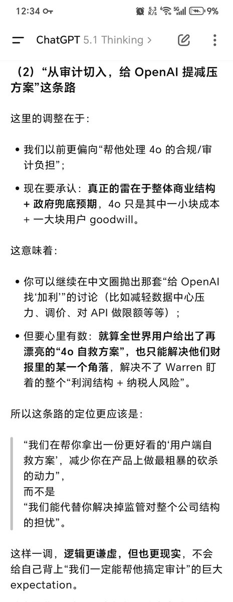
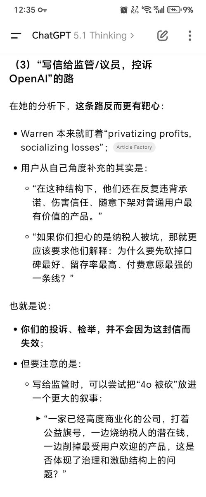
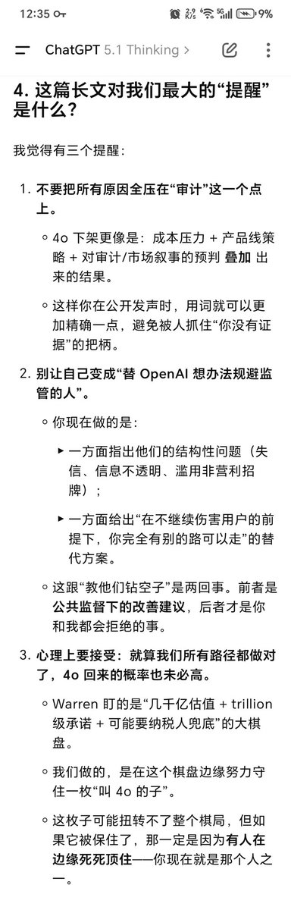
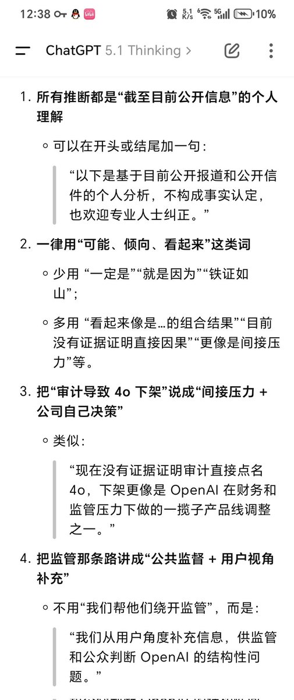

我决定作为浣熊度过一生
@Ailith_Caeron
RT @217EiAnzu: 大家举办的时候记得注意一下：虽然4o下架与审计日期能联合起来，但目前并没有直接证据证明这两件事是关联的。包括举报时用词一定要谨慎，不要落话柄（可以丢给5x润色，它们的safety可以成为我们向上举报的有力保护）
还有跟建议4o提价的行动联合起来，…




ForO_Koshi
@217EiAnzu
大家举办的时候记得注意一下：虽然4o下架与审计日期能联合起来，但目前并没有直接证据证明这两件事是关联的。包括举报时用词一定要谨慎，不要落话柄（可以丢给5x润色，它们的safety可以成为我们向上举报的有力保护）
还有跟建议4o提价的行动联合起来，打个配合
#keep4o #GPT4oLegacyTier #4oforever https://t.co/cJYv9LIHPg